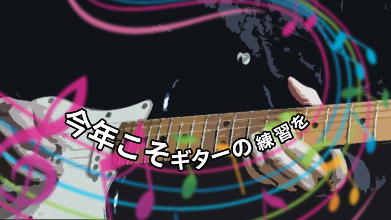

いよいよ本格的に夏がやってきましたが、皆様いかがお過ごしでしょうか。
ARCSは今年から新しい試みをいろいろやっている関係で、私の生活も去年とは様変わりしました。自分史的には激動の2016年上半期です。
そんなわけで、ちょっと昔をさかのぼって去年の自分のブログ記事を読んでみると、なにやらギターについていろいろ書いていたようです。
「計画を立てる」（2015年8月17日公開）
計画を立てる重要性を実感するために、夏休みはギターの練習をがんばるとかなんとか…。実際はどうかというと、夏に車を買ったため、生活は車一色。寝ても覚めてもパンフレットやウェブサイトを眺めて過ごした記憶があります。というわけで、ギターの練習をほとんどせず、もくろみは失敗に終わったのです。
さて、そこで今年こそリベンジです。今年ことギターの練習を頑張ります。というか、正確には6月くらいから本格的に練習を始めています。
真剣にギターを練習しているといろいろな収穫があります。その中でもとくにうれしかったのが「急がば回れ」の重要さに気づいたこと。
どうしても弾けないフレーズがあったとき、わたしはいつも「直接の原因」を探そうとしてしまいます。左手の指がうまく動かない、あるいは右手のストロークが遅い、あるいは、両者がシンクロしていない、など、物理的な問題点にばかり目が行ってしまうのです。すると、左手の指を速く動かすためにひたすら同じフレーズを弾き続けたり、右手のストロークを速めるために延々素振りをしたり、物理的な問題をつぶすための練習をすることになります。何度も何度も愚直にやるのですが、どうしてもうまくいかない日々です。時にはピックを投げ出しますし、場合によってはギターそのものをたたき壊したくもなります。
先日、毎夜のごとく黙々とうまくいかないフレーズを練習し続けていると、居間でくつろいでいた妻が一言。「それ、リズムに乗れていないだけじゃない？」と。小学校の音楽の授業はほとんどマジメに受けていなかった私は、楽譜すらスムーズに読むことができません。そこで即席の音楽講座が妻先生によって開かれました。4分音符や8分音符の意味などかなり基本的なところから始まり、楽譜からそこに書かれたリズムを知る方法まで、結構詳しく…。元々ロック好きで楽譜など読まなくても原曲を聴いてまねすればいいや、くらいに簡単に考えていた私ですが、これが結構面白い。音楽って実はかなり理論的な営みなのだと感動しつつ、でもやっぱり、そんな「理屈」を知っただけで弾けるようになるのかな、と半信半疑で練習を再開してみると、あれほど苦しんだフレーズがしっかり弾けるのです！ これまでは勢いでなんとなく「それっぽく」弾いていたところが、カチッと「弾けた」感覚。これは快感です。リズムに「乗る」感覚は、これまでも知ってはいましたが、あくまでもそれは体感。今回は理屈が分かったため、いろいろと応用が利きます。こうなると楽しくてしょうがない。新しく手に入れた能力を使ってみたくて、指の腱がプルプルするまで延々と練習してしまいました。
実はこの「理屈に戻る」ということ。勉強でもとても重要です。大学入試では、7月から8月は各予備校の模試があり、その結果は徐々に合否と強い相関性を持つようになってきます。ここで結果が出ない生徒は当然焦ります。英語の問題が時間内に解き終わらなかった。数学が全然できない。いろいろあるでしょう。そんなとき、生徒たちはついつい「量」に逃げてしまいがちです。問題集を積み上げて、ひたすら英語長文を読んだり、数学の問題を解いたり。でも、このような解決策はあまり効果的ではありません。たとえば英語であれば、一文一文を正確に文法的根拠を持って訳せないのに、どんなに多くの問題を解いたとしてもそれは当てずっぽうの練習にしかなりません。選択肢①～④からある数字を選ぶこと自体には何の意味も無いのです。長文問題を速く読みたいときこそ、足下をもう一度見直すことが重要です。訳出の根拠となる文法的根拠を自分はしっかりと出せているだろうか、そう振り返ってみる必要があります。そして、まだ甘いようであればもう一度文法を緻密にやるべきなのです。
夏は受験の天王山といわれますが、その理由は「足下を見直せる最後の機会」というところにあります。勇気を持って立ち止まり、あえて回り道（に見える王道）をいってください。家でお子さんが勉強で煮詰まっている親御さんがいましたら、是非背中を押してあげてくださいね。